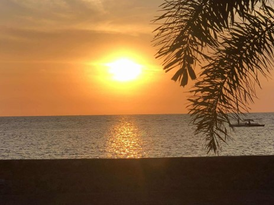
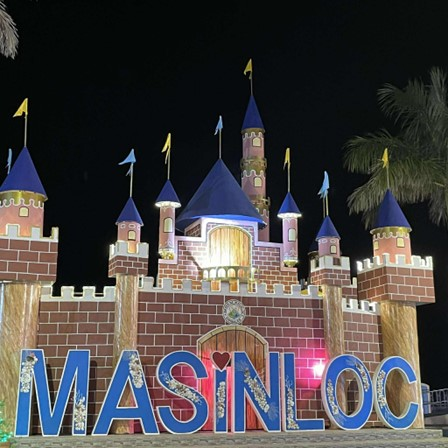

Little Wishes for Little Treasures
by Egaran, Chelsea | July 24, 2025
Long, sticky, sweaty, and dusty commutes with passengers fighting for the seats closest to the jeepney’s rear entrance, as if it were the highest throne of the late Tudor monarchy, just so they won't have to keep passing other people’s fares to the driver. Sidewalks peppered with varying modes of transport, and pedestrian lanes that would make my aunties recite a whole prayer, hoping that the next vehicle coming would at least slow down and not propel our beings into oblivion.

In the city, we become seasoned warriors. Guards and senses are always up and polished. It is a must to know what to do, where to go, how to act, and to always move with purpose and precision.

And so, the air buzzes a little with excitement when school breaks are just around the corner, because that means I get to open the latch of our wooden gate and be welcomed by the half a dozen dogs wagging their tails in our little hometown in Masinloc, Zambales.
Long, cold, foggy morning walks through small roads, with the occasional encounter of empty lots filled with massive, strong trees sprinkled with little creatures singing on the branches. These moments make me feel the Hozier yell in “Northern Attitude,” where my heart feels as heavy as an elephant’s, pushing tears of appreciation for life to the corners of my eyes. Beaches and islands that don’t need three months of planning just to get to. Sunsets crafted so beautifully, it feels like fairies arranged them to hold your gaze until the sun finally dips beneath the salty ocean at Baywalk Municipality Park. The small red hill with the most refreshing view at the top, perfect for beginner hikers, Mount Batolino.
Among them all, my favorite: a place I believed, when I first witnessed it, could easily be the setting of Pemberley. A vast, luscious green field in Lipay, with a full view of the mountain in the distance, the soft ripple of the river just below the edge of the land, the sharp, prickly scent of grass, and far off in the distance, trees bowing toward each other to form a natural canopy over a small entrance used by locals. Even now, I believe it's a portal to another dimension.
Every little, nature-bound, cost-free adventure I’ve had within Masinloc feels like the tune created by the plucked sequence in the intro of “Would That I.” It is a testament that life is meant to be a lyrical composition, crafted like Hozier writes songs, with intellect and intention. That it is okay to simply be, to wander, and to feel your soul rather than rush to match the pace of a bustling world.
It is in the undoing of the urban persona that I hope any plans for our town’s advancement will not follow the usual course of development. Skyrise infrastructure should not come at the expense of an indie mountain, or another seaside lined with dolomite just to make room for a mall. I hope it will not be guided by a desire to alter the place purely for mainstream entertainment or to suit general consumption.
These tiny, genuine, and humble discoveries within small towns may not match the fame of Mayon or Boracay and may feel worlds apart from Bonifacio Global City. They may never be found by foreign or local tourists at all. But they could be someone’s home—someone’s own little national treasure.
Back to top